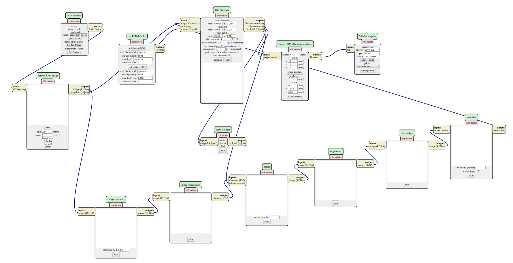
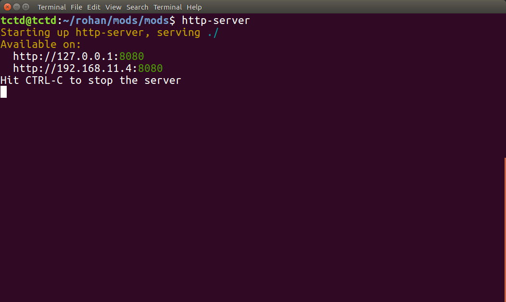
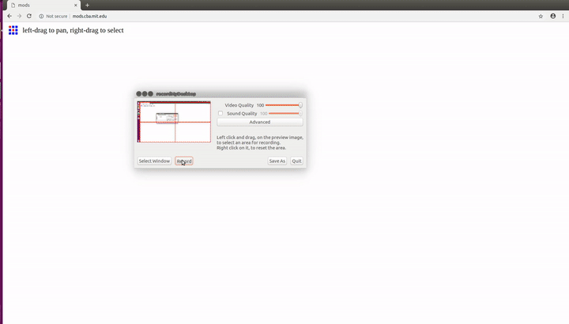
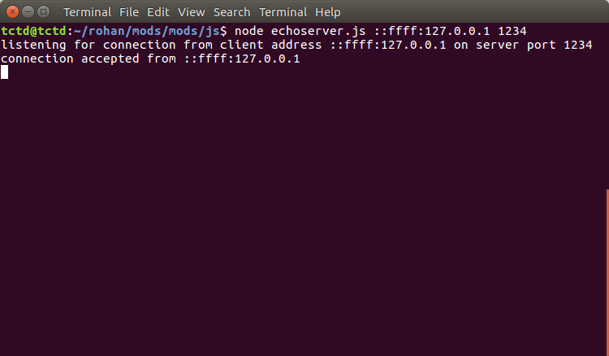
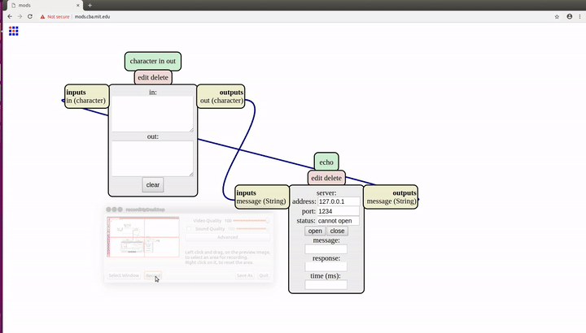

Setting up MODS on Linux
This tutorials shows you how to setup and use the new version of MODS mods.cba.mit.edu locally or directly via the mods website.

Installing dependencies and nodejs
Install the dependencies using the following commands:
sudo apt update
sudo apt install build-essential
curl -o- https://raw.githubusercontent.com/creationix/nvm/v0.34.0/install.sh | bash
piping directly to bash could be harmful
Check whether nvm is installed using command -v nvm
You might need to open a new terminal.
nvm install node
npm install -g http-server printer ws
Install node-gyp and libcups2
sudo apt install node-gyp libcups2-dev
Cloning the MODS repository and running the local server.
Cloning is not necessay, clone only if you want to run MODS locally. If you want to run mods directly on the internet, just download the 'js' folder from the repository, skip to 'Testing with echoserver.js'
git clone http://gitlab.cba.mit.edu/pub/mods.git
Navigate to the mods directory, and start a http server by http-server.
By default the server will is hosted at localhost (127.0.0.1:8080)

You've sucessfully hosted MODS!
Testing with echoserver.js
Now open the mods, either via localhost or [cba website] (http://mods.cba.mit.edu).
->right click -> modules -> open server module -> in out
->right click -> modules -> open server module -> echo
Join the output of the 'character in out' out(character) to the input message(string) of the 'echo' and the output of 'echo' to the input of the 'character in out'

In terminal, navigate to the 'js' folder and start the echoserver by:
node echoserver.js 127.0.0.1 1234
or
node echoserver.js ::ffff:127.0.0.1 1234
IPv6 is preferred
Click on the open button on the echo module, the port is opened.
Checking the terminal, we can see that an incomming connection is accepted.

If you get error, you can try using the IPv6 address (::ffff:127.0.0.1).
Now you can test by typing in the "out" text window of the 'character in out' module. It should appear in the "in" window.

Interfacing with machines
Currently MODS can directly interface directly with:
MDX-20
SRM-20
Roland Vinyl Cutter (GX-24)
And indirectly can create tool paths formats in:
.spb for Shopbot
.gcode for CNC machines
Direct interfacing
Let us consider MDX-20:
It is recommended to remove the milling bit before setup to prevent breaking due to errors.
In browser,
-> right click -> programs -> open server program -> MDX 20 PCB
In terminal navigate to the 'js' folder
node serialserver.js ::ffff:127.0.0.1 1234
Correct permissions need to be set in order to allow access to the machine.
The machine is listed in /dev usually with ttyUSB0. Your port may vary.
Depending upon the port, update the value in 'WebSocket Serial' under serial device
sudo chmod a+rwx /dev/ttyUSB0
To avoid setting premissions after every reboot and make persistant changes, add the user to the group by:
replace username by your username.
sudo adduser username lp
sudo adduser username lpadmin
Under serialserver click open
MDX-20 is now interfaced with mods. Update the origin values in Roland MDX-20 milling machine and press move to origin.
The tool holder should move to the new position.
The process is similar for SRM-20 and GX-24, choose the correct programs in browser.
For SRM-20:
node deviceserver.js ::ffff:127.0.0.1 1234
For GX-24:
node printserver.js ::ffff:127.0.0.1 1234
- Orignal by: Rohan Rege
- Created on date: 19 - Feb - 2019
- Last review on date: 23 - Feb - 2019
- Last modified by: Rohan Rege